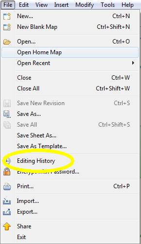
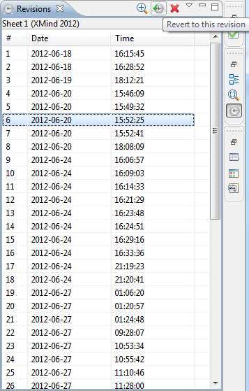
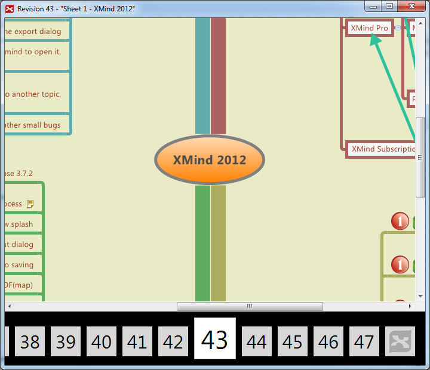

XMind stores all saved revisions of a file. Every revision can be reverted or deleted easily.
Open revision view from file menu
Handle revisions in the view Select a revision and click the button on view toolbar, you can preview, revert, or delete it.
Navigate revisions Left/right arrow key can help you here to switch among revisions.